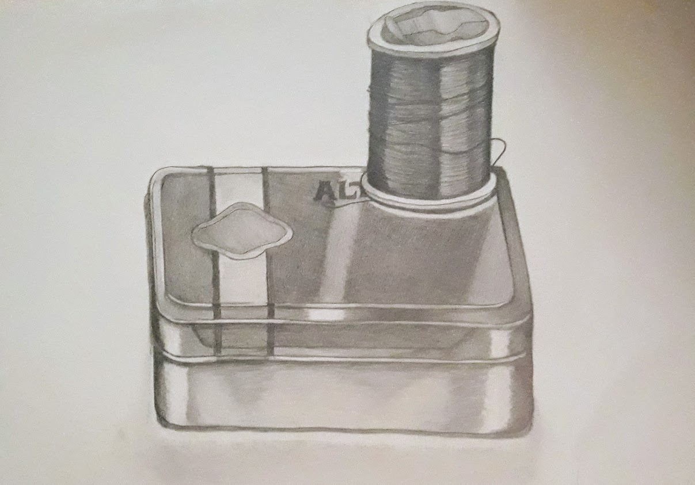
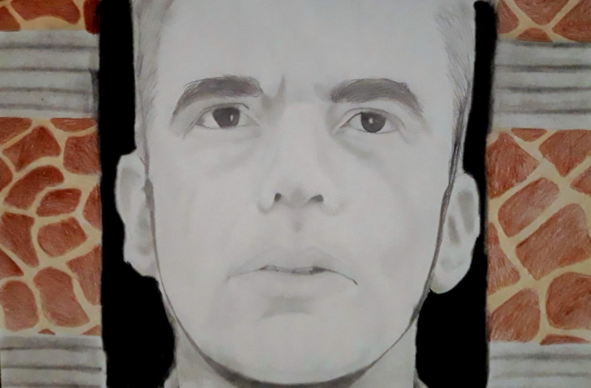
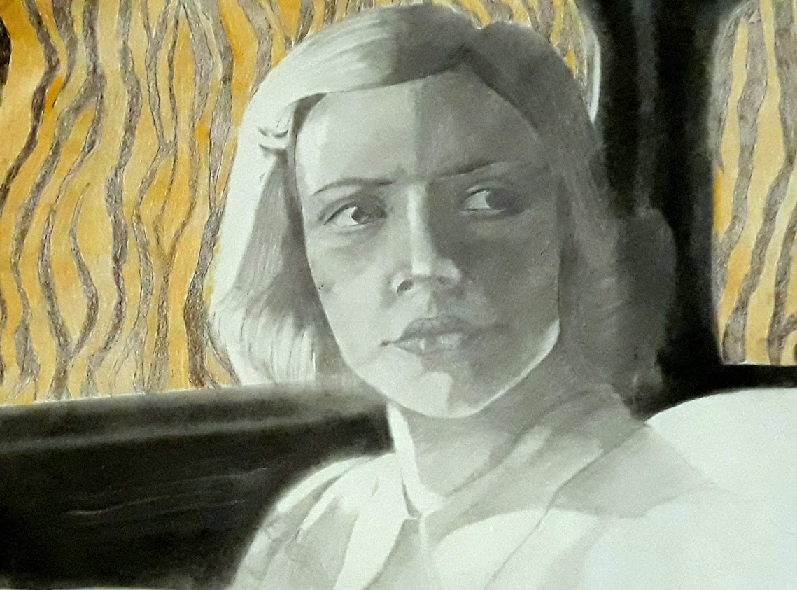
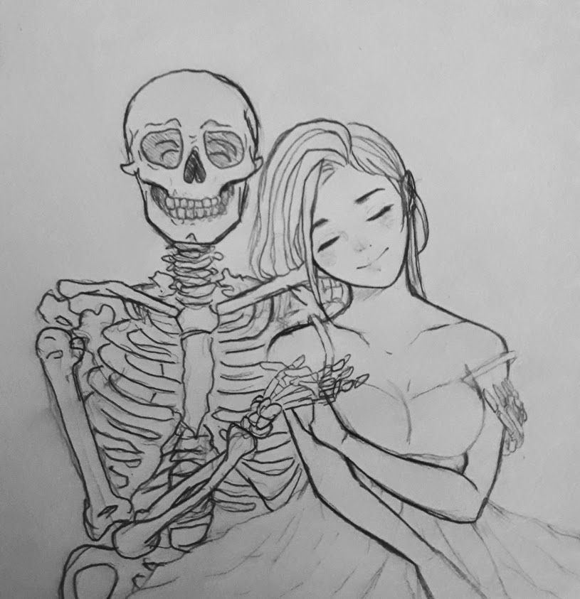
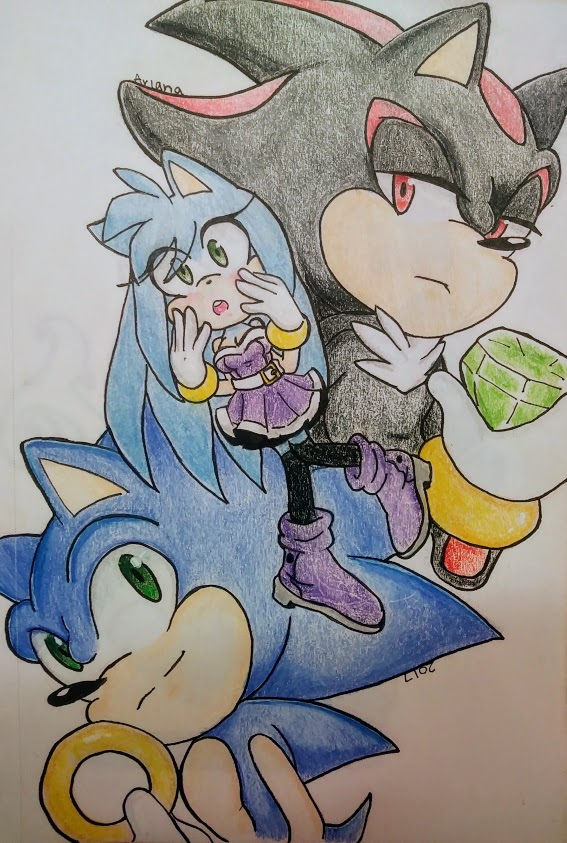

Ariana Rojas
Drawing Portfolio

Me, Myself, and I
A montoge drawing of all the things in my life I enjoy or enjoy doing in life. from playing video games to swimming, and drawing. theres also things in this drawing that I had struggled with in life.
Thread on Altoids
A still image of threads used for sowing, on top of a empty metal altoids box.
 The Man Who Wasn't There series
charcoal with graphite
3 movie still images from the movie "The Man Who Wasn’t There. I picked scenerios from the movie that gave me a window in being able to combine it with animal patterns to show how intimidating the movie portrayed.
Still Flower
A still image drawn during class. We were tested to be able to recreate reflection on a metal or transparent object. While also being able to create contrast between dark and lighter objects.
Till death
graphite
During these times people of my generations live life having no fear of death. Even I myself, doesnt even seem bothered by it. Almost embracing death, holding it by its hands. Maybe event waiting for it.
Sketch
A drawing I wanted to do of My OC(own character) that I made. While having the two main character in the video game series Sonic The Hedgehog. I wanted to make a nicely visual and colorful representation of their personalities in one page.
Beloved
A colorful drawing I made of sonic characters, as I always find it enjoying to draw their animal like quality. I wanted to draw another OC of mine who is a ninetails, while hugging a younger version of Tails.